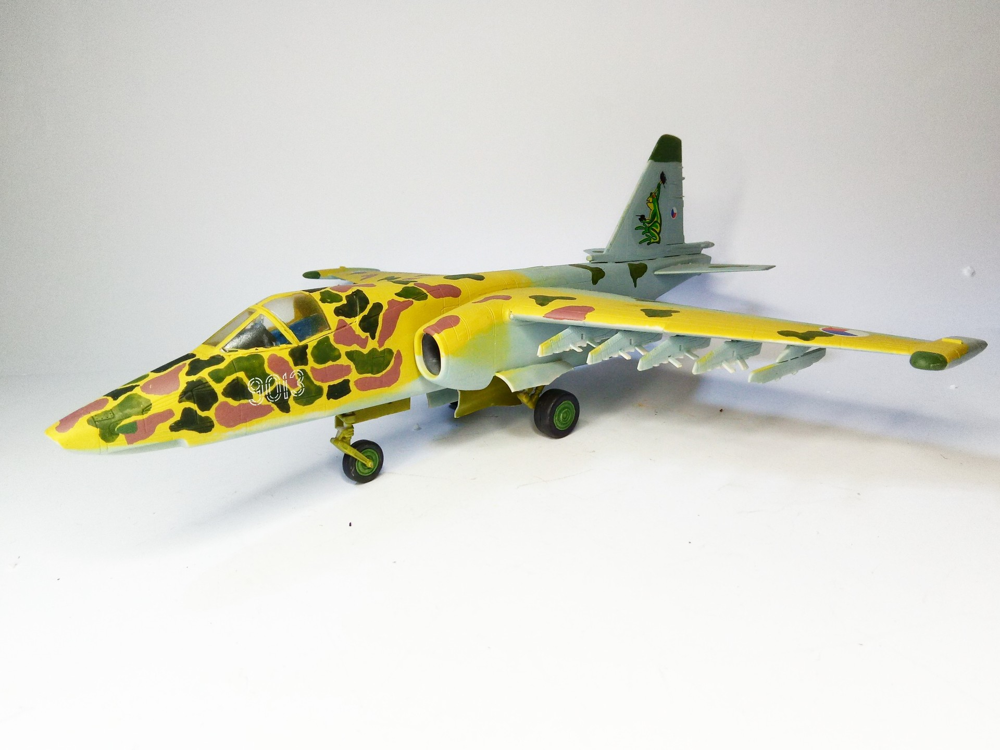
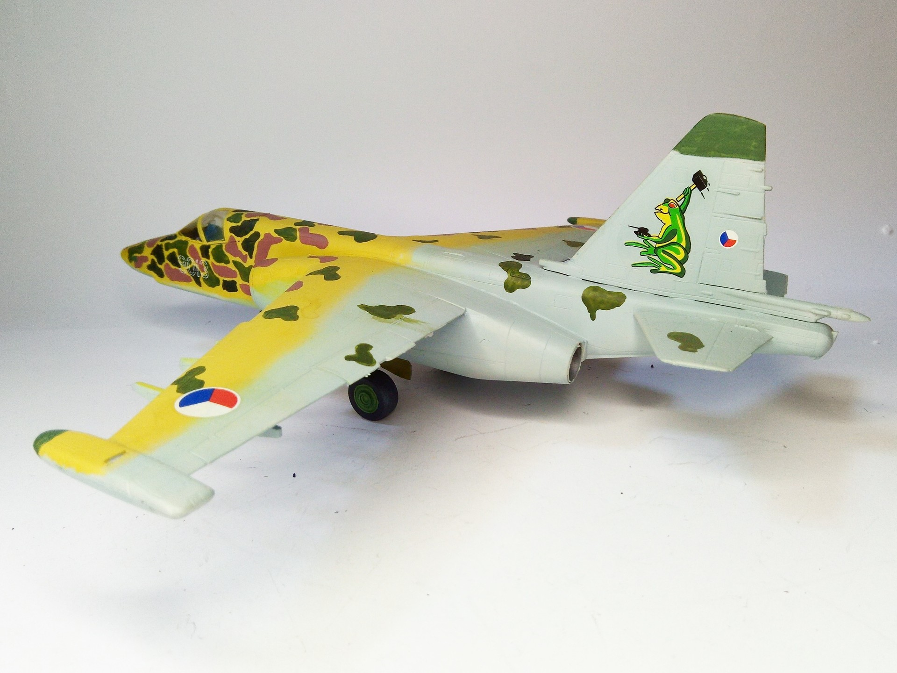

Aerei · scale model archive
Suchoj Su-25 K
Suchoj Su-25 K — Kit: Aero Team, Scale: 1/48. Pretty Czech Air Force special livery #1/48 #AeroTeam #Su25

Photo gallery

English description
Pretty Czech Air Force special livery
#1/48 #AeroTeam #Su25
Descrizione italiana
Bella livrea speciale dell’Aeronautica ceca.